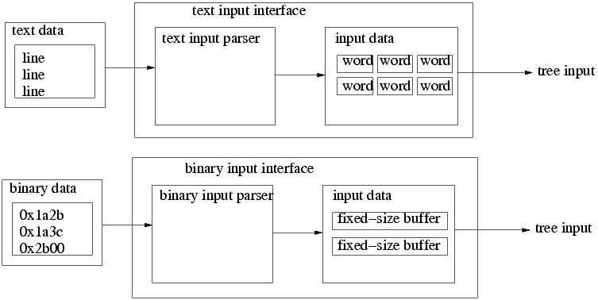
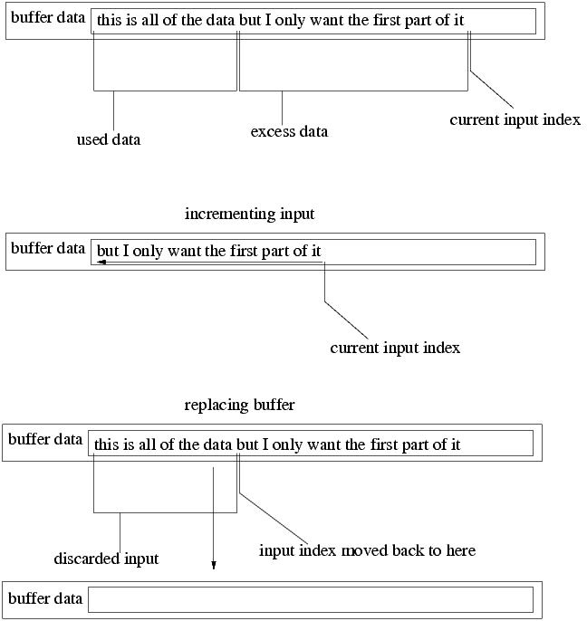

mandatory functions
receive input
incrementing input
end-of-data


advanced functions
terminated function
input mode function
included input interfaces
C++ file interface
C file interface
standard input interface
Previous
Main
Next